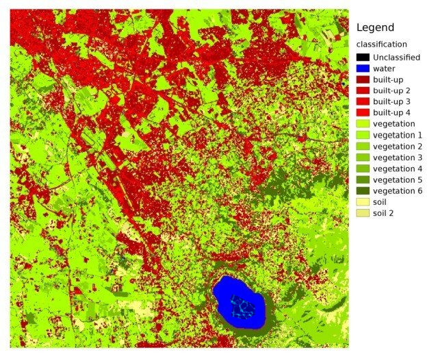

1. PARTE DE INTRODUCCION¶
1.1. Primera Sección¶
Si escribo un párrafo normal ¿será que ya el título aparece solo en una página?
Mi primer fórmula:
\[X = a_b - C\]
Una tabla
Primer Super tabla
| Pruebas | Cantidad | Total |
|---|---|---|
| Primera prueba | 2 | 2 |
1.1.1. Espero que haya salido una tabla¶
¿Saldría una tabla?
Mi nombre como ejemplo : con este tamaño se puede mostrar una imagen en línea con el texto. Esta es una citación será????
{kind=link}
Salió?
Sí salió
1.1.1.1. Por poco¶
Ya tengo mayores conocimientos sobre el lenguaje RST.
Faltan solo algunos Detalles
1.1.1.1.1. Segunda sección¶
En esta sección se escribira algo para mostrar que en un páarafo normal las líneas manuales son omitidas y se hace el que no tiene. Esta es la tercer línea dentro del rst.
1.2. PARTE DE MANEJO¶
- Voy a escribir un párrafo y debajo una sangría
- ¿se habrá aplicado la sangría?
No, creo que no.
Ahora es un párrafo que
respeta las líneas manuales
introducidas en el archivo
RST. Debería verse como en
el código.
Regresa al cap02 donde hay una ¿será que puedo volver a este párrafo desde tercera? .